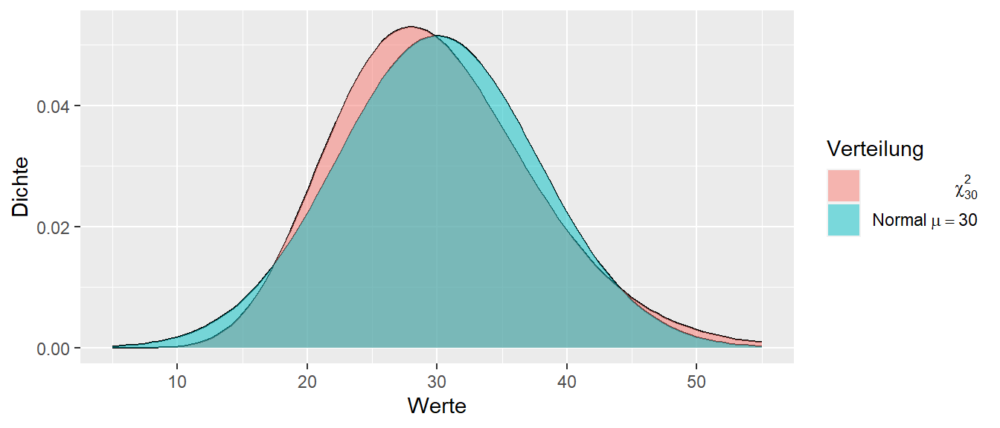

10 Theoretische Verteilungen
Wie wir in den vorhergehenden Abschnitten gesehen haben, brauchen wir immer die Stichprobenverteilung um etwas über die beobachteten Daten ausssagen zu können. Im Lummerland-Beispiel haben wir die Stichprobenverteilung einfach direkt hergeleitet, da wir komplettes Wissen über die Population hatten. Dies hat uns ermöglicht alle möglichen zu beobachtenden Werte zu berechnen. Dieser Fall ist leider bei einem realen Experiment nicht gegeben, dann wenn wir die Population und den Effekt kennen, dann brauchen wir das Experiment gar nicht erst durchzuführen. Sondern wir wollen anhand unserer Stichprobe etwas über die Population aussagen. Wir benötigen aber nichts desto trotz die Stichprobenverteilung. Diese können wir herleiten, wenn wir in der Lage sind unserer Stichprobe mit einer uns bereits bekannten Verteilung zu verknüpfen. Die Verteilung ist dabei eine theoretische Verteilung und unsere Aufgabe ist zu zeigen, dass unsere Stichprobe die Voraussetzungen und Annahmen der theoretischen Verteilung erfüllt. Dazu setzen wir uns in diesem Abschnitt etwas eingehender mit dem Konzept der Verteilung auseinander und werden in diesem Zusammenhang verschiedene für uns relevanten theoretische Verteilungen kennenlernen.
Gehen wir noch einmal zurück und fangen mit dem Graphen einer Verteilung an. Auf der x-Achse sind die verschiedenen, möglichen Werte der jeweiligen Statistik abgetragen. In unserem bisherigen Beispiel war das der Unterschiede \(D\) zwischen der Kontroll- und der Treatmentgruppe. Auf der y-Achse ist die relative Häufigkeit abgetragen. In dem speziellen Fall war das auch sinnvoll, da wir nur eine endliche Anzahl von möglichen Unterschieden \(D\) (ihr erinnert auch an die Zahl) vorliegen hatten. Was passiert aber wenn wir tatsächlich eine kontiuierliche Statistik haben, also eine Statistik die alle Werte innerhalb eines Intervalls einnehmen kann. Um den Fall zu verstehen fangen wir aber erst mal wieder mit einem einfachen Modell an.
10.1 Der Münzwurf und die Bionomialverteilung
Beginnen wir mit dem einfachsten Experiment an: dem Münzwurf. Beim Münzwurf haben wir zwei mögliche Ausgänge unseres Experiments: Kopf oder Zahl. Wir gehen von einer perfekten Münze aus, d.h. die Münze ist vollkommen symmetrisch und keine der Seiten ist in irgendeiner Form schwerer und beeinflusst den Ausgang des Experiments.
Wenn wir uns an die Schule zurück erinnern, dann haben wir in Wahrscheinlichkeitstheorie schon mal was gehört, das im Fall gleichwahrscheinlicher Ereignisse die Wahrscheinlichkeit für ein bestimmtes Ereignis, mittels der Anzahl der vorteilhaften Ausgänge geteilt durch die Anzahl der möglichen Ausgänge berechnet wird. Also beim einmaligen Münzwurf haben wir zwei Ausgänge \(\{\text{Kopf}, \text{Zahl}\}\) und jeweils nur einen vorteilhaften Ausang also entweder Kopf oder Zahl, daher folgt daraus.
\[\begin{align} P(\text{Kopf}) &= \frac{1}{2} \\ P(\text{Zahl}) &= \frac{1}{2} \end{align}\]
Tragen wir dies als Graphen in Form einer Wahrscheinlichkeitsverteilung ab, dann sieht das noch wenig interessant aus (siehe Abbildung 10.1). Das Muster ist aber trotzdem wichtig, damit wir später wissen worauf wir hier eigentlich schauen. Auf der x-Achse haben wir die möglichen Ausgänge, Kopf oder Zahl, und auf der y-Achse haben wir die Wahrscheinlichkeit abgetragen.
Da sich mit einem Münzwurf aber nur wenig anfangen lässt, erhöhen wir die Komplexität etwas und schauen uns an, was passiert wenn wir zwei Münzwwürfe durchführen. Rein operational, wir werfen unsere Münze in die Luft, schreiben uns das Ergebnis auf, und wiederholen diesen Vorgang noch einmal. Was auch immer beim ersten Wurf passiert, hat keine Auswirkungen auf das Ergebnis des zweiten Wurfs. Wir könnten aber auch zwei Münzen nehmen und beide gleichzeitig in die Luft werfen. Das wäre das gleiche Experiment.
Welche möglichen Ereignisse Ausgänge haben wir jetzt beim zweimaligen Münzwurf? Zunächst einmal haben wir jetzt nicht mehr nur einen einzelnen Ausgang sondern wir haben ein Ereignisstupel. Ein Tupel ist eine geordnete Liste mit Elementen, d.h. \((1,2) \neq (2,1)\).
Definition 10.1 (Tupel) Ein Tupel ist eine geordnete Liste von Elemente die nicht notwendigerweise Unterschiedlich sein müssen. Da die Liste geordnet ist, spielt die Reihenfolge der Elemente eine Rolle.
Etwas motiviertes kritzeln auf einem Schmierblatt wird für den zweimaligen Münzwurf wahrscheinlich relativ schnell zu folgender Tabelle führen (siehe Tabelle 10.1).
| Ausgang 1. Wurf | Ausgang 2. Wurf | Tupel |
|---|---|---|
| Kopf | Kopf | (Kopf, Kopf) |
| Kopf | Zahl | (Kopf, Zahl) |
| Zahl | Kopf | (Zahl, Kopf) |
| Zahl | Zahl | (Zahl, Zahl) |
Jetzt können wir uns wieder fragen, was die Wahrscheinlichkeit \(P\) für die jeweiligen Ereignisse, die Ereignistupel, ist. Eine direkte Herleitung ist wieder über die Symmetrie zu argumentieren. Es gibt vier verschiedene Ereignisse von denen keines in irgendeiner Weise bevorzugt ist. Daraus folgt das alle vier Ausgänge die gleiche Wahrscheinlichkeit haben. Damit folgt eine Wahrscheinlichkeit von \(P = \frac{1}{4}\) für jedes der Ereignisse.
Eine weitere Möglichkeit wäre mit den Wahrscheinlichkeiten aus dem einfachen Wurf an das Problem heran zu gehen. Wir betrachten die beiden Münzwürfe jetzt wieder sequentiell (siehe Abbildung 10.2). Im ersten Schritt können wir entweder Kopf oder Zahl beobachten. Beide Wahrscheinlichkeiten sind \(P = \frac{1}{2}\). Darauf folgend können wir wieder zwei verschiedene Ausgänge beobachten, eben Kopf oder Zahl, wieder mit der Wahrscheinlichkeit \(P = \frac{1}{2}\).
flowchart TD
A[Start] --> B(Kopf)
A --> C(Zahl)
B --> D(Kopf)
B --> E(Zahl)
C --> F(Kopf)
C --> G(Zahl)
Da die Münzwürfe voneinander unabhängig sind und keinen Einfluss aufeinander ausüben, folgt daraus, dass die Wahrscheinlichkeiten für jede spezielle Folge von Kopf oder Zahl sich berechnet nach:
\[ P(\text{Ausgang}) = P(\text{1. Wurf}) \times P(\text{2. Wurf}) \tag{10.1}\]
Also in unseren Fall:
\[ P(\text{Ausgang}) = \frac{1}{2} \times \frac{1}{2} = \frac{1}{4} \tag{10.2}\]
Das wir die Wahrscheinlichkeiten miteinander multiplizieren können, wenn die Ereignisse unabhängig sind ist tatsächlich die Definition von Unabhängigkeit in der umgekehrter Richtung.
Definition 10.2 (Unabhängigkeit) Seien zwei Ereignisse \(E_1\) und \(E_2\) gegeben. Wenn die Wahrscheinlichkeit für das kombinierte Ereignis \(E_1 \cap E_2\) mittels \(P(E_1 \cap E_2) = P(E_1)P(E_2)\) berechnet wird, dann sind die beiden Ereignisse unabhängig voneinander. Umgangssprachlich gibt mir Kenntnis von Ereignis \(E_1\) keine Information über das Ereignis \(E_2\) bzw. genauso anders herum.
Angewandt auf den Münzwurf kommen wir wieder beim gleichen Ergebnis wie vorher an. Der Vorteil dieser Herangehensweise ist jedoch, dass wir damit eine einfache Möglichkeit gefunden haben das Ergebnis für mehr als zwei Würfe verallgemeinern zu können. Nehmen wir zum Beispiel den dreifachen Münzwurf. Die Wahrscheinlichkeit für die Folge KKZ kann direkt mittels \(P(\text{KKZ}) = \frac{1}{2}\times \frac{1}{2} \times \frac{1}{2} = \frac{1}{8}\) berechnet werden.
Bleiben wir aber erst noch mal kurz beim zweimaligen Münzwurf und schauen uns die Wahrscheinlichkeitsverteilung an. Hier stoßen wir nämlich auf ein Problem in der Darstellung. Wenn wir bei dem Muster aus Abbildung 10.1 bleiben wollen und auf der x-Achse die möglichen Ergnisse und auf der y-Achse die dazugehörende Wahrscheinlichkeit abtragen wollen, dann ist nicht ganz klar wie wir die Ergebnisse ordnen sollen. Eine mögliche Lösung ist in Abbildung 10.3 zu sehen.

Dies ist natürlich nicht die einzige Möglichkeit wie wir die Ereignisse ordnen können sondern wahrscheinlich ist jede der 24 möglichen Anordnungen gleich sinnvoll. Als Alternative könnte wir aber auch nicht mehr die beiden einzelnen Ausgänge als Ereignisse wählen, sondern zum Beispiel nur noch die Anzahl der beobachteten Köpfe in unseren zwei Würfen zählen. Dies würde zu der folgenden Zuordnung führen (siehe Tabelle 10.2).
| Ereignisse | Anzahl der Köpfe |
|---|---|
| (Kopf, Kopf) | 2 |
| (Kopf, Zahl) | 1 |
| (Zahl, Kopf) | 1 |
| (Zahl, Zahl) | 0 |
Wir verlieren bei dieser Zuordnung die Information bei welchem Wurf die Zahl beobachtet wurde. In der Terminologie der Wahrscheinlichkeitstheorie wird die Anzahl der Köpfe als Zufallsvariable bezeichnet.
Definition 10.3 (Zufallsvariable) Eine Zufallsvariable ist die Abbildung eines Zufallsereignisses auf eine Zahl. Formal, wenn wir mit \(\Omega\) die Menge der möglichen Ausgänge eines Experiments bezeichnen, dann ist eine Zufallsvariable eine Funktion die jedem Element \(\omega \in \Omega\) eine Zahl \(x \in \mathbb{R}\) zuordnet (siehe Abbildung 10.4).
flowchart LR
A[Ereignis] --> B(Zahl)
Wenn wir uns jetzt die Wahrscheinlichkeiten für unsere Zufallsvariable anschauen, dann sehen wir aber, dass wir nicht mehr vier verschiedene Ausgänge haben, sondern nur noch drei und das die Wahrscheinlichkeit für diese drei Ereignisse nicht alle gleich sind.
| Ereignisse | Zufallsvariale | Wahrscheinlichkeit |
|---|---|---|
| (Zahl, Zahl) | Keine Köpfe | \(\frac{1}{4}\) |
| (Kopf, Zahl)(Zahl,Kopf) | 1 Kopf | \(\frac{1}{4} + \frac{1}{4} = \frac{1}{2}\) |
| (Kopf,Kopf) | 2 Köpfe | \(\frac{1}{4}\) |
Wahrscheinlichkeitsverteilung unserer Zufallsvariable als Graph abtragen ergibt Abbildung 10.5.

Nur um nebenbei noch einmal das Offensichtliche Anzusprechen. Die Summe aller Ereigniswahrscheinlichkeiten muss \(1\) sein. Das sollte auch direkt einsichtig sein. Wenn ich alle möglichen Ereignisse abfrage also: “Was ist die Wahrscheinlichkeit das ich keine Köpfe, 1 Kopf oder 2 Köpfe beim zweimaligen Münzwurf erhalte”, dann sind das alle möglichen Ausgänge und dementsprechend sollte die Wahrscheinlichkeit “1” sein oder mathematisch ausgedrückt:
\[ P(\text{0 Köpfe} \cup \text{1 Kopf} \cup \text{2 Köpfe}) = \frac{1}{4} + \frac{1}{2} + \frac{1}{4} = 1 \]
Damit haben wir den Fall zweier Münzwürfe abgefrühstückt. Gehen wir nun zum nächst komplizierteren Fall. Die Anzahl der Köpfe bei drei Münzwürfen. Welche Möglichkeiten gibt es hier? Nun bei drei Würfen kann entweder \(0, 1, 2\) oder \(3\) Kopf auftreten. Wenn wir die Wahrscheinlichkeiten für diese vier Ereignisse berechnen wollen, können wir aber nicht einfache \(\frac{1}{4}\) für jedes Ereignis als Wahrscheinlichkeit ansetzen (Warum?). Schauen wir uns erst einmal wieder die möglichen Tupel, oder auch die Elemenarereignisse, den wir erinnern uns, dass die Anzahl der Köpfe eine Zufallsvariable ist. Also eine Abbildung der 3-fach Tupel auf eine der Zahlen \(\{0, 1, 2, 3\}\).
| Elementarereignis | Anzahl Kopf |
|---|---|
| (Z,Z,Z) | \(0\) |
| (K,Z,Z) | \(1\) |
| (Z,K,Z) | \(1\) |
| (Z,Z,K) | \(1\) |
| (K,K,Z) | \(2\) |
| (Z,K,K) | \(2\) |
| (K,Z,K) | \(2\) |
| (K,K,K) | \(3\) |
Die Elementarereignisse in Tabelle 10.4 sind wieder alle gleichwahrscheinlich, daher können wir einfach abzählen. Es gibt insgesamt \(8\) mögliche Ausgänge. \(0\)-mal oder \(3\)-mal Kopf kommen jeweils einmal vor, \(3\) Ausgänge haben jeweils \(1\)-mal oder \(2\)-mal Kopf. Daraus folgt für die Wahrscheinlichkeitsfunktion (siehe Tabelle 10.5).
| Anzahl Kopf | P |
|---|---|
| \(0\) | \(\frac{1}{8}\) |
| \(1\) | \(\frac{3}{8}\) |
| \(2\) | \(\frac{3}{8}\) |
| \(3\) | \(\frac{1}{8}\) |
Das Ganze auch wieder als Graph (siehe Abbildung 10.6)

Bleiben wir noch einmal kurz bei dem Beispiel und versuchen uns die Wahrscheinlichkeiten anders herzuleiten. Sollten wir zum Beispiel einmal in die Verlegenheit kommen und 20 Münzwürfe untersuchen wollen, dann wird die Tabelle relativ schnell unhandlich.
Sei \(N\) die Anzahl der Würfe die wir durchführen. Wenn wir \(N\) kennen, wissen wir auch direkt welche möglichen Ausgänge bei dem Experiment möglich sind, nämlich alle Zahlen zwischen \(0\) und \(N\). \(0\) wenn wir kein Kopf in den \(N\) Würfen beobachtet haben, und \(N\) wenn wir nur Kopf geworfen haben. Dementsprechend sind alle Zahlen dazwischen auch möglich.
Schauen wir uns jetzt noch mal den dreimaligen Münzwurf an. Wenn wir kein Kopf werfen in \(3\) Würfen und betrachten die Würfe wieder sequentiell, dann haben wir \(\frac{1}{2}\) für die erste Zahl, \(\frac{1}{2}\) für die zweite Zahl und \(\frac{1}{2}\) für die dritte Zahl. Also insgesamt \(P(1 \text{ Kopf}) = \frac{1}{2} \times \frac{1}{2}\times \frac{1}{2} = \frac{1}{8}\). Aber diese Wahrscheinlichkeit hat ja jedes Elementarereignis egal ob es (K,K,K) oder (K,Z,K) oder (Z,Z,K) usw. ist. Jetzt haben wir aber das Problem, das wir für \(1\times\) oder \(2\times\) Kopf nicht nur eine Möglichkeit vorhanden diese Anzahl an Kopf zu beobachten. In Tabelle 10.4 haben wir bereits gezeigt, dass jeweils drei verschiedene Möglichkeiten, Kombination von Kopf und Zahl, möglich sind. D.h. wir haben ein Abzählproblem. Können wir irgendwie direkt bestimmen wie viele unterschiedliche Möglichkeiten es gibt?
Schauen wir uns den Fall \(1\times\) Kopf im 3-fach Tupel an. Auf wie viele Arten können wir 3-fach Tupel erzeugen mit nur einem Kopf. Kopf kann entweder an der ersten, der zweiten oder der dritten Stelle auftreten und die jeweils anderen Position im Tupel sind mit Zahl besetzt. Das hört sich aber ähnlich wie ein Problem an wie wie etwas was wir schon vorher einmal gehört haben. Als wir uns die Anzahl der möglichen Stichproben aus unserer kleinen Welt angeschaut haben. Dort hatten wir das Problem, das wir bestimmen wollten auf wie viele Möglichkeiten wir zwei Stichproben mit jeweils drei Personen aus 20 Personen ziehen können. Dabei sind wir auf den Binomialkoeffizienten gestoßen Gleichung 7.3.
\[ \text{Anzahl} = \binom{n}{k} = \frac{n!}{k!(n-k)!} \]
Formal berechnet der Binomialkoeffizient die Möglichkeiten \(k\) Objekte aus \(n\) Objekten zu ziehen. Wenden wir das auf unseren Dreifachwurf an mit \(n = N = 3\) und \(k = 1\). Ausgeschrieben, auf wie viele Arten können wir \(1\times\) Kopf aus drei Positionen auswählen erhalten wir:
\[\begin{equation*} \text{Kombinationen mit }1\times\text{ Kopf} = \binom{3}{1} = \frac{3!}{1!(3-1)!} = \frac{3\times 2 \times 1}{1\times 2 \times 1} = 3 \end{equation*}\]
Passt. Probieren wir das auch direkt mit dem Ereignis \(2\times\) Kopf, also mit \(N = 3\) und \(k = 2\), aus.
\[ \text{Kombinationen mit } 2\times \text{ Kopf} = \binom{3}{2} = \frac{3!}{2!(3-2)!} = \frac{3\times 2 \times 1}{2\times 1 \times 1} = 3 \]
Passt auch. Jetzt müssen wir noch nur die beiden Fälle \(0\times\) und \(3\times\) Kopf behandeln. Wenn wir in einem Mathebuch den Binomialkoeffizienten nachschlagen, dann sind dort die beiden folgenden Definition zu finden für die Fälle \(k=0\) und \(k=n\).
\[\begin{align*} \binom{N}{N} &= 1 \\ \binom{N}{0} &= 1 \end{align*}\]
Wenn wir diese Definition für die anderen beiden verbleibenden Fälle anwenden, erhalten wir:
\[\begin{align*} \text{Kombinationen mit } 0\times \text{ Kopf} &= \binom{3}{0} = 1 \\ \text{Kombinationen mit } 3\times \text{ Kopf} &= \binom{3}{3} = 1 \end{align*}\]
Damit können wir nun für alle möglichen Ausgängen die Anzahl der möglichen Elementarereignisse mittels bestimmen. Allgemein erhalten wir dadurch eine Formel für die Wahrscheinlichkeiten der Ereignisse für den dreifachen Münzwurf.
\[ P(k \times \text{Kopf}) = \binom{3}{k} \frac{1}{2} \times \frac{1}{2} \times \frac{1}{2} = \binom{3}{k} \left(\frac{1}{2}\right)^3 \tag{10.3}\]
Weil wir natürlich nach einer allgemeinen Lösung suchen, führen wir jetzt noch ein paar Symbole ein. Die Zufallsvariable, also die Anzahl von Kopf, bezeichnen wir mit dem Großbuchstaben \(Y\). Einen speziellen Ausgang bezeichnen wir nun mit dem Kleinbuchstaben \(y\) anstatt \(k\). Damit würden allgemein die Wahrscheinlichkeit für irgendeines der Ereignisse mit \(Y = y\) bezeichnen. Wenn wir ein spezielles Ereignis ausweisen wolle, z.B. das Ereignis \(3\times\) Kopf, setzen wir \(y = 3\). Formal:
\[\begin{equation*} P(Y = 3) = \binom{3}{3}\left(\frac{1}{2}\right)^3 \end{equation*}\]
Die nächste Verallgemeinerung die wir Vornehmen betrifft die Wahrscheinlichkeit das Kopf auftritt. Bisher sind wir von einer perfekten, symmetrischen Münze ausgegangen mit der Wahrscheinlichkeit \(P(\text{Kopf}) = P(\text{Zahl}) = \frac{1}{2}\). Wir führen das Symbol \(p\) für die Wahrscheinlichkeit \(P(\text{Kopf}) = p\) ein. So können wir auch abbilden, wenn wir eine unfaire Münze haben. Wenn jetzt aber \(p \neq \frac{1}{2}\) gilt, also zum Beispiel die Wahrscheinlichkeit für Kopf \(p = \frac{2}{3}\) wäre, dann ist die Wahrscheinlichkeit für Zahl nicht mehr die Gleiche wie für Kopf. Führen wir noch für die Wahrscheinlichkeit für das Auftreten von Zahl nun das Symbol \(q\) ein. Wir haben die Randbedingung das die beiden Wahrscheinlichkeiten \(p\) und \(q\) zusammen \(=1\) sein müssen. Formal:
\[\begin{equation*} p + q = 1 \end{equation*}\]
Daraus folgt, dass \(q = 1 - p\) ist.
Übertragen wir diesen Formalismus auf unseren Münzwurf. Wir können uns zunutze machen, dass wir wissen wie viele Würfe durchgeführt wurden, nämlich \(N\), und wie viele davon Kopf waren, nämlich \(y\). Damit wissen wir automatisch auch die Anzahl von Zahl, \(N - y\). Jedes Kopf, hat die Wahrscheinlichkeit \(p\) und jede Zahl hat die Wahrscheinlichkeit \(q = 1 - p\). Das gilt unabhängig von der Reihenfolge, da z.B. die Wahrscheinlichkeiten \(KKZK\) und \(ZKKK\) gleich \(ppqp = qppp\) sind. Insgesamt haben wir \(y \times K\) und \((n-y) \times Z\) also \(p^y\) und \(q^{n-y}\). Diesen Zusammenhang können wir in eine Formel stecken.
\[\begin{equation} P(Y = y) = \binom{N}{y}p^y (1-p)^{N-y} = \binom{N}{y}p^y q^{N-y} \label{eq-binom-distribution} \end{equation}\]
Damit haben wir jetzt auch direkt unsere erste theoretische Verteilung kennengelernt, die in der Statistik eine zentrale Rolle spielt. Die Verteilung in Formel \(\eqref{eq-binom-distribution}\) wird als die Binomialverteilung bezeichnet. Da die Formel \(\eqref{eq-binom-distribution}\) von den Parametern \(p\) und \(n\) abhängt, wird die Binomialverteilung als eine Familie von Verteilungen bezeichnet.
Definition 10.4 (Binomialverteilung) Die Binomialverteilung beschreibt die Anzahl der Erfolge in einer Serie von \(N\) unabhängigen Versuchen. Die Versuche können jeweils nur genau zwei mögliche Ausgänge haben (Erfolg oder Misserfolg). Die Binomialverteilung mit \(N\) Versuchen und der Erfolgswahrscheinlichkeit \(p\) und der Misserfolgswahrscheinlichkeit \(q = 1 - p\) und den möglichen Ausgängen \(y = 0,1,\ldots,N\) berechnet sich nach:
\[\begin{equation} P(Y = y) = \binom{N}{y}p^y (1-p)^{N-y} = \binom{N}{y}p^y q^{N-y} \end{equation}\]
Die Binomialverteilung ist eine diskrete Verteilung da sie auf einer endlichen Anzahl möglichen Ausgängen definiert ist (nicht ganz korrekt aber ausreichend für uns). Die Binomialverteilung ist eine Familie von Verteilungen und spezielle Verteilungen werden mit dem Symbol \(B(N,p,y)\) bezeichnet.

Schauen wir uns aber noch mal ob wir mit den ganzen Symbolen wirklich unseren dreifachen Münzwurf zurückbekommen. Es gilt \(N = 3, p = \frac{1}{2}\). Daraus folgt das \(q = 1 - p = 1 - \frac{1}{2}=\frac{1}{2}\). Wenn wir uns noch an \(x^a x^b = x^{a+b}\) aus der Schule erinnern folgt:
\[\begin{align*} P(Y = 0) &= \binom{3}{0} \left(\frac{1}{2}\right)^{0}\left(\frac{1}{2}\right)^3 = \binom{3}{0}\left(\frac{1}{2}\right)^3 = 1 \left(\frac{1}{2}\right)^3 \\ P(Y = 1) &= \binom{3}{1} \left(\frac{1}{2}\right)^{1}\left(\frac{1}{2}\right)^2 = \binom{3}{1}\left(\frac{1}{2}\right)^3 = 3 \left(\frac{1}{2}\right)^3 \\ P(Y = 2) &= \binom{3}{0} \left(\frac{1}{2}\right)^{2}\left(\frac{1}{2}\right)^1 = \binom{3}{2}\left(\frac{1}{2}\right)^3 = 3 \left(\frac{1}{2}\right)^3 \\ P(Y = 3) &= \binom{3}{0} \left(\frac{1}{2}\right)^{3}\left(\frac{1}{2}\right)^0 = \binom{3}{3}\left(\frac{1}{2}\right)^3 = 1 \left(\frac{1}{2}\right)^3 \\ \end{align*}\]
Tatsächlich können wir unser Ergebnis von oben wiedergewinnen. Die Funktion der Binomialverteilung (Formel \(\eqref{eq-binom-distribution}\)) wird als Wahrscheinlichkeitsfuntion bezeichnet.
Definition 10.5 (Wahrscheinlichkeitsfunktion) Eine Wahrscheinlichkeitsfunktion ist eine mathematische Funktion, die die Wahrscheinlichkeiten für alle möglichen Ausgänge eines diskreten Zufallsexperiments angibt. Sie wird auch als diskrete Wahrscheinlichkeitsverteilung bezeichnet. Eine Wahrscheinlichkeitsfunktion ordnet jedem möglichen Ausgang \(x\) eines Experiments eine Wahrscheinlichkeit \(P(X = x)\) zu. Die Wahrscheinlichkeit liegt zwischen 0 und 1. Die Summe aller Wahrscheinlichkeiten für alle möglichen Ergebnisse muss gleich 1 sein. Eine Wahrscheinlichkeitsfunktion kann als Tabelle oder als Formel dargestellt werden
Für die Eigenschaften einer Verteilung gibt es einer weitere Darstellungsform, die Verteilungsfunktion.
Definition 10.6 (Verteilungsfunktion) Die Verteilungsfunktion gibt die Wahrscheinlichkeit \(P\) an, dass eine Zufallsvariable \(X\) einen Wert kleiner oder gleich einem bestimmten Wert \(x\) annimmt, formal \(P(X \leq x)\). Sie wird daher auch als kumulative Verteilungsfunktion bezeichnet.
Um die Definition der Verteilungsfunktion leichter nachzuvollziehen schauen wir uns das Ganze graphisch an (siehe Abbildung 10.8).


Die Wahrscheinlichkeitsfunktion gibt, wie schon bekannt, die Wahrscheinlichkeit für eine bestimmtes Ereignis an. Zum Beispiel, die Wahrscheinlichkeit bei \(p = 0.5, n = 10, 5\times\) Kopf zu sehen ist etwas unter \(0.25\). Wir könnten uns aber auch fragen, was die Wahrscheinlichkeit ist \(5\) oder weniger Köpfe zu beobachten. Diese Wahrscheinlichkeit setzt sich zusammen aus aus den Ereignissen \(X = 0, X = 1, X = 2, X = 3, X = 4, X = 5\) zusammen. Daraus werden die Wahrscheinlichkeiten \(P(X = 0) + P(X = 1) + P(X = 2) + P(X = 3) + P(X = 4) + P(X = 5)\). Genau diesen Wert gibt die Verteilungsfunktion (siehe Abbildung 10.8 (b)) an. Die Wahrscheinlichkeitsfunktion und Verteilungsfunktion sind eineindeutig ineinander überführbar. Von der Wahrscheinlichkeitsfunktion zur Verteilungsfunktion haben wir eben schon gezeigt. Die gegengesetzte Richtung erhalten wir mittels:
\[\begin{equation*} P(X = x) = P(X \leq x) - P(X \leq x-1) \end{equation*}\]
D.h. wenn wir die Verteilungsfunktion haben, um die Wahrscheinlichkeit für \(P(X = x)\) zu erhalten, nehmen wir den Wert der Verteilungsfunktion für den Wert \(X = x\) und ziehen davon den Wert für \(X = x - 1\) ab. Später bei den kontinuierlichen Verteilungen lernen wir noch die Dichtefunktion kennen, welche die Funktion der Wahrscheinlichkeitsfunktion einnimmt.
Für unser Ausgangsproblem ist jetzt aber mit der Verteilungsfunktion die Möglichkeit gegeben, das wir bestimmte Wahrscheinlichkeitsbereiche unserer Verteilung auszeichnen können. Denn die Wahrscheinlichkeitsfunktion liefert uns die Antwort auf die Frage, welchen Wertebereich wir für eine gegebene Verteilung eher nicht erwarten würden. Schauen wir uns zum Beispiel die Verteilung bei \(p = 0.5\) und \(n = 30\).
In Abbildung 10.9 sehen wir, dass wir zum Beispiel recht überrascht wären, wenn wir bei einem Durchgang von \(30\) Münzwürfen einen Wert von z.B. \(x = 29 \times\) Kopf beobachten würden. Es ist nicht unmöglich, aber es wäre schon überraschend. Diesen Grad der Überraschung können wir als Kriterium nehmen, um zu entscheiden ob wir eine bestimmt Beobachtung dazu verwenden würden diese als Evidenz für oder gegen eine bestimmte Verteilungsannahme zu sehen.
Setzen wir unser Kriterium z.B. bei 2% an. Die Entscheidung wird jetzt folgendermaßen getroffen. Wenn wir einen Wert beobachten der unter der Annahme einer fairen Münze die wir \(30\times\) aus dem Bereich der Werte von \(\leq2\%\) kommt. Dann sehen wir dies als Evidenz gegen die Annahme an.
In diesem Zusammenhang wird später auch noch einmal die Umkehrfunktion der Verteilungsfunktion praktisch werden. Diese Funktion wird als die Quartilfunktion bezeichnet. Angewandt auf Abbildung 10.8 (b) sieht die Quartilfunktion wie folgt aus.


D.h. in Abbildung 10.10 (b) können wir auf der \(x\)-Achse eine Quantile ablesen, also einen Wahrscheinlichkeit für \(P(X \leq x)\) und auf der \(y\)-Achse steht die dazugehörende Anzahl von Kopf. Der Graph hat eine etwas eigenwillige Form, der darauf zurück zu führen ist, dass wir aufgrund der Struktur des Experiment nur wenige mögliche Ausgänge \([0,1,\ldots,10]\) haben.
Konkret in der Anwendung, könnten wir zum Beispiel \(\alpha = 0.2\) ansetzen. Dann würden wir links und rechts jeweils \(10\%\) abschneiden und als kritische Bereiche ansehen. In Abbildung 10.10 (b) können wir dann ablesen, dass bei einem Ausgang von \(\leq 2\) oder \(\geq 9\) Köpfen wird überrascht sein würden.
Definition 10.7 (Quantilfunktion) Die Quantilfunktion ist die Umkehrfunktion der Verteilungsfunktion. Die Quantilfunktion gibt für eine gegeben Wahrscheinlichkeit den Wert der Zufahlsvariablen an.
10.2 Übergang von diskreten zur kontinuierlichen Verteilungen
Das Beispiel der Binomialverteilung sollte dazu dienen die Herleitung der verschiedenen Verteilungsfunktionen einmal von Grund auf aufzubauen und damit hoffentlich nachvollziehbar zu machen. In den Fällen die wir im folgenden Untersuchen, betrachten wir jedoch in den meisten Fällen kontinuierliche Verteilungen, d.h. die Zufallsvariable kann, zumindest theoretisch, alle Werte auf dem reellen Zahlenstrahl von \([-\infty, \infty]\) annehmen. Konzeptionelle ändert sich beim Übergang zu kontinuierlichen Zahlen zunächst einmal nichts. Die Herleitung ist allerdings etwas komplizierter, so dass wir die Ergebnisse hier nur zur Kenntnis nehmen.
Ein grundlegender Unterschied besteht darin, dass wir keine Wahrscheinlichkeits- sondern eine Dichtefunktion haben. Der Unterschied rührt daher, dass wir unsere bisherige informelle Herleitung der Wahrscheinlichkeit bei einer kontinuierlichen Funktion nicht anwenden können. Schauen wir dazu kurz die folgende Normalverteilung an, die wir weiter unten noch mal im Detail betrachten.

Der Wertebereich der Funktion ist \([-\infty,\infty]\). D.h. wenn ich jetzt die Wahrscheinlichkeit für einen einzelnen Werte, z.B. \(x = 1\) mit unserem bisherigen Ansatz berechnen möchte, dann bekomme ich das Problem, dass die mögliche Anzahl von Ausgängen \(\infty\) ist. Wenn ich daher mit unserem bisherigen Ansatz reingehen, dann erhalten wir.
\[\begin{equation} P(X = 1) = \frac{1}{\infty} = 0 \label{eq-p-cont-inf} \end{equation}\]
D.h. die Wahrscheinlichkeit einen speziellen Wert zu bekommen ist \(=0\). Um diesen Unterschied zur Wahrscheinlichkeitsfunktion klarzustellen wird daher daher von Dichtefunktionen gesprochen. Eine saubere Definition erfordert etwas mehr mathematische Details als für unsere weitere Anwendung notwendig ist. Daher lassen wir das hier erst einmal so stehen.
Wir wollen aber trotzdem in der Lage sein Wahrscheinlichkeiten zu bestimmen. Dies können, sobald wir nicht mehr von einzlenen Werten von Intervallen sprechen. z.B. was ist die Wahrscheinlichkeit unter der Dichtefunktion in Abbildung 10.11 einen Werte \(0 \leq x \leq 1\) zu beobachten. Hier können wir wieder das Modell der diskreten Wahrscheinlichkeitsfunktion nehmen und summieren die Höhe aller Werte \(f(x)\) zwischen \(0 \leq x \leq 1\) auf (siehe Abbildung 10.12).
Das erinnert uns natürlich zurück an die Schule und und die gelbe Fläche in Abbildung 10.12 unter der Kurve ist natürlich das Integral der Funktion über diesen Wertebereich. Formal folgt daher für die Wahrscheinlichkeit:
\[\begin{equation*} P(X = 0 \leq x \leq 1) = \int_{x=0}^1 f(x) dx \end{equation*}\]
Insgesamt können wir aber immer das mentale Modell aus der Binomialverteilung anwenden und müssen nur zur Kenntnis nehmen das Integrale anstatt Summen gebildet werden. Dies wird in unserer Arbeit aber kaum eine Rolle spielen, da die Berechnung für uns von Funktionen vorgenommen wird.
Im Folgenden werden vier verschiedene theoretische Verteilungen noch einmal etwas genauer vorgestellt, da diese Verteilung immer wieder im weiteren Verlauf auftauchen werden. Dies sind die Normalverteilung, die \(t\)-Verteilung, die \(\chi^2\)-Verteilung und die \(F\)-Verteilung. Dabei ist es, außer bei der Normalverteilung, weniger wichtig sich die Formeln einzuprägen sondern es soll eher darum gehen die Form der Verteilung, den Wertebereich und die Parameter der Verteilung zu kennen. Also zum Beispiel wird die Normalverteilung durch zwei Parameter \(\mu\) und \(\sigma^2\) spezifiziert während die \(\chi^2\)-Verteilung nur über einen einzelnen Parameter den Freiheitsgrad \(df\) bestimmt wird. Streng genommen wird auch nicht über vier Verteilungen gesprochen, sondern es handelt sich um jeweils Verteilungsfamilien, da es beispielsweise nicht die eine Normalverteilung gibt, sondern die Form wie eben beschrieben von den beiden Parametern abhängt. Dies gilt in gleichem Maßen ebenfalls für die anderen behandelten Verteilungen.
10.2.1 Binomialverteilung in R
In R gibt es wie für die anderen Verteilung wieder vier Funktionen. dbinom() für die Wahrscheinlichkeitsfunktion, pbinom() für die Verteilungsfunktion, qbinom() für die Quartilfunktion und rbinom() um Zufallszahlen entsprechend einer Binomialverteilung zu erzeugen. Um beispielsweise die Wahrscheinlichkeiten \(P(Y = y)\) für \(y = 0,1,\ldots, 10\) für die Binomialverteilung mit \(p = 0.3\) und \(n = 10\) zu berechnen, kann der folgende Code verwendet werden.
dbinom(0:10, size = 10, prob = 0.3) [1] 0.0282475249 0.1210608210 0.2334744405 0.2668279320 0.2001209490
[6] 0.1029193452 0.0367569090 0.0090016920 0.0014467005 0.0001377810
[11] 0.000005904910.3 Normalverteilung
Schauen wir uns als nächstes die wohl wichtigste theoretische Verteilung, die Normalverteilung an. Die Funktion der Normalverteilung hat die folgende Form:
\[\begin{equation} f(x|\mu,\sigma^2) = \frac{1}{\sqrt{2 \pi \sigma^2}}e^{\left(-\frac{(x-\mu)^2}{2\sigma^2}\right)} \label{eq-normal-distribution} \end{equation}\]
Die Normalverteilung ist wiederum eine Verteilungsfamilie mit den beiden Parametern \(\mu\) und \(\sigma^2\). Sie ist eine symmetrische Verteilung und hat die uns schon oft begegnete Glockenform (siehe Abbildung 10.13).

Der Wertebereich der Normalverteilung ist \(X \in [-\infty, \infty]\). Das Maximum liegt genau beim Erwartungswert \(\mu\) der die Verteilung in die linken 50% und die rechten 50% unterteilt. D.h. der Median und Mittelwert sind bei der Normalverteilung gleich. Das Abfallen der Flanken wird über die Varianz \(\sigma^2\) geregelt. Wird \(\sigma^2\) größer, fallen die Flanken flacher ab, wird \(\sigma^2\) kleiner, fallen die Flanken schneller ab (siehe Abbildung 10.14).


In Abbildung 10.13 wird der Graph nicht als Wahrscheinlichkeitsfunktion wie bei der Binomialverteilung sondern als Dichtefunktion bezeichnet. Der Unterschied kommt daher, dass die Normalverteilung keine diskrete Verteilung sondern eine kontinuierliche Verteilung ist. Vereinfacht ausgedrückt, wenn wir unsere bisherige Herleitung von Wahrscheinlichkeiten nehmen, dann haben wir im Unterschied zur Binomialverteilung bei der Normalverteilung unendlich viele Ereignisse (=Werte) zur Verfügung. Alle werte zwischen \(-\infty\) und \(\infty\) sind möglich. Dementsprechend wenn wir die Wahrscheinlichkeit für einen einzelnen Wert nach \(\frac{1}{\text{Anzahl der Möglichkeiten}}\) berechnen erhalten wir \(P(X) = \frac{1}{\infty} = 0\). Daher macht es im Fall einer kontinuierlichen Verteilung wenig Sinn von der Wahrscheinlichkeit für einen einzelnen Wert zu sprechen. Wahrscheinlichkeiten können in diesem Fall immer nur für bestimmte Bereiche berechnet werden.
In Abbildung 10.15 ist ein Bereich gelb ausgezeichnet. Für diesen Bereich kann nun die Wahrscheinlichkeit, die Fläche unter der Kurve, berechnet werden. Wenn wir Fläche unter der Kurve hören, dann wissen natürlich sofort das das Integral der Funktion gemeint ist. Daher berechnet sich die Wahrscheinlichkeitt für ein Intervall \([a,b]\)
\[\begin{equation*} P(a \leq X \leq b) = \int_{a}^b f(x|\mu,\sigma^2)dx \end{equation*}\]
Die Standardabweichung \(\sigma\) (Wurzel der Varianz) eignet sich , die Dichtfunktion in verschiedene Intervalle um \(\mu\) herum mit bestimmten Wahrscheinlichkeiten zu unterteilen. Es gelten die folgenden Zuweisungen(siehe Tabelle 10.6):
| \(x \in\) | P |
|---|---|
| \([\mu-\sigma,\mu+\sigma]\) | 0.682 |
| \([\mu-2\sigma,\mu + 2\sigma]\) | 0.955 |
| \([\mu-3\sigma,\mu + 3\sigma]\) | 0.997 |
Übertragen auf den Dichtegraphen folgt (siehe Abbildung 10.16):

Wie in Tabelle 10.6 zu sehen ist, hat der Bereich \([-2\sigma, 2\sigma]\) eine Wahrscheinlichkeit von etwas über \(0.95\). Daher, wenn ich einen Bereich um den Erwartungswert \(\mu\) auszeichnen möchte, der genau eine Wahrscheinlichkeit von \(0.95\) hat, dann muss \(\sigma\) mit einem kleineren Wert als \(2\) multipliziert werden, nämlich \(1.96\). Das wird hier noch mal speziell erwähnt, da die Zahl \(1.96\) später immer wieder auftaucht. Formal:
\[P(x\in[\mu-1.96\sigma, \mu+1.96\sigma]) = 0.95\]
Anders herum, wenn es darum geht ein Konfidenzintervall abzuschätzen, dann kann die Faustregel, Teststatistik \(\pm 2\times\) Standardfehler angewendet werden.
10.3.1 Die Standardnormalverteilung \(\Phi(Z)\)
Eine Sonderrolle in der Familie der Normalverteilungen spielt die Standardnormalverteilung mit \(\mu = 0\) und \(\sigma^2 = 1\). Tatsächlich taucht diese so oft aus, dass die Mathematiker ihr ein eigenes Symbol spendiert haben \(\Phi(z)\)
\[ \Phi(z) = \mathcal{N}(\mu = 0, \sigma^2 = 1) \]
Im Fall der Standardnormalverteilung nehmen Tabelle 10.6 und Abbildung 10.16 besonders einfache Formen an da die Intervalle jeweils \([-1,1]\), \([-2,2]\) und \([-3,3]\) sind (siehe Abbildung 10.17).

10.3.2 z-Transformation
Jede beliebiege Normalverteilung \(\mathcal{N}(\mu,\sigma^2)\) kann mittels einer Transformation auf die Standardnormalverteilung \(\mathcal{N}(0,1)\) abgebildet werden. Die Transformation wird als z-Transformation bezeichnet und hat die folgende Form:
\[\begin{equation} Z = \frac{X - \mu_X}{\sigma_X} \label{eq-z-transformation} \end{equation}\]
D.h. der Mittelwert der Verteilung von \(X\), \(\mu_x\) wird von X abgezogen und die Differenz wird durch die Standardabweichung der Population \(\sigma_X\) geteilt. Die Zufallsvariable \(Z\) ist dann Standardnormalverteilt \(Z \sim Phi(z)\).
Die Umkehrfunktion der z-Transformation berechnet sich nach:
\[\begin{equation} X = \mu_X + z \sigma_X \label{eq-z-invtransformation} \end{equation}\]
Mittels der z-Transformation kann z.B. ein Intervall um eine beliebige, normalverteilte Zufallsvariable \(X\) mit einer bestimmten Wahrscheinlichkeit erstellt werden. Möchte ich zum Beispiel ein Intervall \([A,B]\) mit der Wahrscheinlichkeit \(P(X \in [A,B]) = 0.95\) ermitteln. Dann kann ich die z-Transformation folgendermaßen verwenden:
Wir suchen das Interval \([A,B]\) in dem einer normalverteilten Zufallsvariable \(X\) mit einer bestimmten Wahrscheinlichkeit \(p\) enthalten ist. Formal
\[\begin{equation*} P(A \leq X \leq B) = p \end{equation*}\]
Jetzt wende wir auf die Werte in der ersten Klammer die z-Transformation an.
\[\begin{equation*} P(A \leq X \leq B) = P(\frac{A-\mu_x}{\sigma_x} \leq \frac{X-\mu_x}{\sigma_x} \leq \frac{B-\mu_X}{\sigma_X}) \end{equation*}\]
Definieren wir uns noch zwei neue Hilfsgrenzen \(A^* := \frac{A-\mu_x}{\sigma_x}\) und \(B^* := \frac{B-\mu_x}{\sigma}\) und erhalten:
\[\begin{equation*} P(A \leq X \leq B) = P\left(A^* \leq \frac{X-\mu_x}{\sigma_x} = B^*\right) \end{equation*}\]
Der Term in der Mitte folgt nun einer Standardnormalverteilung. Die Standardnormalverteilung ist symmetrisch um den Nullpunkt herum. Daher können wir die Quartilfunktion der Standardnormalverteilung verwenden und benötigen nur linke Grenze \(A^*\) da die rechte Grenze den gleichen Wert \(\times (-1)\) hat.
Setzen wir nun unser \(p = 0.95\), d.h. wir suchen ein Intervall mit einer Wahrscheinlichkeit von 95%. In Abbildung 10.18 haben wir links \(0.025\) abgeschnitten um die Grenzen unter der Standardnormalverteilung zu ermitteln, da \(2 \times 0.025 = 0.05 = 1 - 0.95\).
Wir erhalten den Wert \(-1.96\) für \(A^*\) und dementsprechend \(1.96\) für \(B^*\). Eingesetzt und zurück transformiert erhalten wir.
\[\begin{align*} P\left(-1.96 \leq \frac{X-\mu_X}{\sigma} \leq 1.96\right) &= P(-1.96\sigma \leq X-\mu_X \leq 1.96\sigma) \\ &= P(X -1.96\sigma \leq \mu_X \leq X + 1.96\sigma) \end{align*}\]
Damit erhalten wir das gewünschte Intervall, das auch noch ein Konfidenzintervall \(\mu\) ist. Solange wir keinen Datenpunkt für \(X\) gesammelt haben, können wir hier über Wahrscheinlichkeiten reden. Die beiden Grenzen des Konfidenzintervalls sind ebenfalls Zufallsvariablen. Sobald wir aber einen Datenpunkt gesammelt haben, also aus dem \(X\) ein \(x\) wird, dann ist alle Zufälligkeit weg und das Konfidenzintervall beschreibt nicht die Wahrscheinlichkeit mit der \(\mu\) enthalten ist. Diese Wahrscheinlichkeit ist entweder \(0\) oder \(1\).
10.3.3 Normalverteilung in R
Dem üblichen Muster folgend haben die Funktion für die Dichtefunktion, die Verteilungsfunktion, die Quartilfunktion und Zufallszahlen in R die Namen dnorm(), pnorm(), qnorm() und rnorm(). Um zehn Zufallszahlen aus der Normalverteilung mit \(\mu = 2\) und \(\sigma = 1.2\) zu ziehen verwenden wir.
rnorm(10, mean = 2, sd = 1.25) [1] 2.90052964 1.41992454 3.44219496 0.62059911 4.14744863 2.67873633
[7] 2.70654392 -0.07586123 2.69844647 2.0068696010.3.4 Zentraler Grenzwertsatz
Die Normalverteilung spielt in der Wahrscheinlichkeitstheorie und der Statistik aus verschiedenen Gründen eine Spezialrolle. Ein Grund dafür ist der sogenannte Zentrale Grenzwertsatz, den wir hier nicht beweisen sondern nur kurz diskutieren.
Aussage 10.1 (Zentraler Grenzwertsatz) Seien \(X_1, X_2, \ldots, X_n\) n unabhängige, gleichverteilte Zufallsvariablen mit \(E[X_i]=\mu\) und \(Var[X_i]=\sigma^2\) endlich. \[ \lim_{n\to\infty}\frac{\bar{x} - \mu}{\frac{\sigma}{\sqrt{n}}}\ \rightarrow\ \mathcal{N}(\mu=0,\sigma^2=1) \]
In Worten besagt der Zentrale Grenzwertsatz, dass egal welche Ursprungsform die Verteilung einer Zufallsvariablen \(X\) hat, wenn die Stichprobengröße gegen unendlich geht, die konvergiert die Differenz des Stichprobenmittelwerts und des Mittelwert der Verteilung geteilt durch den Stichprobenstandardfehler gegen die Standardnormalverteilung. Grenzwertsätz sind manchmal etwas schwierig zu interpretieren, da hier noch keine Aussage gemacht wird, wie groß die Stichprobe sein muss, damit diese Abschätzung valide ist. In der Praxis wird oft ab einer gefühlt großen Stichproben diese Abschätzung als zulässig angesehen.
In Abbildung 10.19 sind die Verteilungen drei Simulationen von binomialverteilten Zufallsstichproben der Größe \(n = \{5, 30, 50\}\) abgebildet. Jede Simulation ist \(400\) durchgeführt worden.

Wir sehen, dass bei einer Stichprobengröße von \(n = 30\) die Standardnormalverteilung schon eine passende Nährung der Stichprobenverteilung liefert.
10.4 \(\chi^2\)-Verteilung
Als Nächstes lernen wir die \(\chi^2\)-Verteilung kennen. Die \(\chi^2\)-Verteilung hat Gegensatz zur Normalverteilung einen rein positiven Definitionsbereich. D.h. die \(chi^2\)-Verteilung ist nur auf positiven Werten definiert bzw. hat eine Dichte \(>0\). Die \(\chi^2\)-Verteilung wird über einen Parameter den Freiheitsgrade \(df\) parameterisiert. D.h. wie auch die Normalverteilung handelt es sich bei der \(\chi^2\)-Verteilung um eine Familien von Verteilungen. In Abbildung 10.20 sind verschiedene \(\chi^2\)-Verteilungen für die Freiheitsgrade \(df = \{1,3,5\}\) abgebildet.
Wie wir in Abbildung 10.20 erkennen können, ändert die \(\chi^2\)-Verteilung in Abhängigkeit von den Freiheitsgraden ihre Form relativ stark. Mit zunehmenden Freiheitsgeraden, ähnelt die Form allerdings immer mehr derjenigen einer Normalverteilung. In Abbildung 10.21 sind einer \(\chi^2\)-Verteilung mit \(df = 30\) und einer Normalverteilung mit \(\mu = 30, \sigma^2 = 60\) abgebildet.

Wir können erkennen, dass sich die Verteilungen schon relativ gut ähneln, wobei die \(\chi^2\)-Verteilung nicht vollständig symmetrisch ist.
Der \(\chi^2\)-Test tritt oft im Zusammenhang mit Testungen von Varianzen auf. Die Herleitung der \(\chi^2\)-Verteilung stammt tatsächlich aus der Normalverteilung, da die Summe von \(n\) quadrierten, standardnormalverteilten Variablen einer \(\chi^2\)-Verteilung mit \(n\) Freiheitgraden folgt.
\[\begin{equation*} Q = \sum_{i=1}^n X_i^2 \sim \chi^2(n \text{ Freiheitsgraden}) \end{equation*}\]
Der Erwartungswert einer \(\chi^2\)-verteilten Zufallsvariable mit \(df = k\) Freiheitsgraden ist \(X\) ist \(E[X] = k\) mit einer Varianz \(Var(X) = 2k\).
10.4.1 \(\chi^2\)-Verteilung in R
Dem üblichen Muster folgend heißen die Funktion für die \(\chi^2\)-Verteilung in R dchisq(), pchisq(), qchisq() und rchisq(). Um zehn Zufallszahlen aus der \(\chi^2\)-Verteilung mit \(df = 10\) zu ziehen verwenden wir.
rchisq(10, 10) [1] 15.406999 9.000456 6.070058 6.602634 5.155919 8.075370 6.072193
[8] 16.399505 13.032320 12.40554510.5 t-Verteilung
Die t-Verteilung ist in ihrem Aussehen der Normalverteilung sehr ähnlich. Bei der t-Verteilung handelt sich ebenfalls um eine symmetrische Verteilung, die allerdings immer den Erwartungswert \(E[X] = 0\). Die Form der t-Verteilung wird über einen Parameter, die Freiheitsgrade \(df\), bestimmt. Die Freiheitsgrade beeinflussen dabei wie stark die Flanken der Verteilung abfallen. In Abbildung 10.22 sind die t-Verteilungen mit den Freiheitsgraden \(df = \{1, 3, 10\}\) abgebildet.

Wir können erkennen, dass die t-Verteilung mit \(df = 1\) mehr Wahrscheinlichkeitsmasse in den Enden hat als die Verteilung mit \(df = 10\). Man bezeichnet sie mit die Verteilung hat schwerer Enden was ausdrückt, dass die Varianz der Verteilung größer ist.
Die t-Verteilung wird oft verwendet wenn neben dem Erwartungswert \(\mu\) auch die Varianz \(\sigma^2\) anhand der Stichprobe bestimmt wird. Formal ist die t-Verteilung definiert als der Quotient einer Standardnormalverteilten und einer \(\chi^2\)-verteilten Zufallsvariable.
\[\begin{equation*} t_{df} = \frac{Z}{\sqrt{\chi^2/df}} \end{equation*}\]
In Abbildung 10.23 sind eine Standarnormalverteilung \(\Phi(x)\) und eine t-Verteilung mit \(df = 3\) abgebildet.

Wir können wiederum erkennen, dass die t-Verteilung schwerere Enden als die Standardnormalverteilung hat.
10.5.1 \(t\)-Verteilung in R
Dem üblichen Muster folgend heißen die Funktion für die \(t\)-Verteilung in R dt(), pt(), qt() und rt(). Um zehn Zufallszahlen aus der \(t\)-Verteilung mit \(df = 10\) zu ziehen verwenden wir.
rt(10, 10) [1] -0.2583099 0.9220496 1.0620453 0.3661527 -0.6801674 2.6278629
[7] 0.8002194 -0.8115022 -0.2560461 -1.511912710.6 F-Verteilung
Eine weitere Verteilung die uns oft begegnen wird, ist die F-Verteilung. Ähnlich wie die \(\chi^2\)-Verteilung, hat die \(F\)-Verteilung auch nur einen positiven Definitionsbereich. Die Familie der \(F\)-Verteilungen ist mittels zweier Parameter spezifiziert \(F(m,n)\). Diese werden als ebenfalls als Freiheitsgrade \(m = df_1\) und \(n = df_2\) bezeichnet.

Wie wir in Abbildung 10.24 sehen, ändert sich die Form der \(F\)-Verteilung relativ stark in Abhängigkeit von den Freiheitsgraden. Formal berechnet sich die F-Verteilung als das Verhältnis zweier \(\chi^2\)-Verteilungen mit Freiheitsgraden \(\text{df}_1\) und \(\text{df}_2\).
\[\begin{equation*} F_{df_1,df_2} = \frac{\chi_{df_1}^2/df_1}{\chi_{df_2}^2/df_2} \end{equation*}\]
Der Erwartungswert berechnet sich nach \(E[F_{df_1,df_2}] = \frac{df_2}{df_2-2}\). Wenn eine Zufallsvariable \(X\) einer \(t\)-Verteilung mit \(n\) Freiheitgraden folgt, dann folgt \(X^2\) einer \(F\)-Verteilung mit \(df_1 = 1, df_2 = n\) Freiheitsgraden.
\[\begin{equation*} X \sim t_{df} \Rightarrow X^2 \sim F(1,df) \end{equation*}\]
10.6.1 \(F\)-Verteilung in R
Wenig überraschend heißen die Funktion für die \(F\)-Verteilung in R df(), pf(), qf() und rf(). Daher können wir zum Beispiel die \(0.95\)-Quantile für die \(F\)-Verteilung mit \(df_1 = 2, df_2 = 30\) folgendermaßen berechnen.
qf(0.95, 2, 3)[1] 9.55209410.7 Gleichverteilung
Schauen wir uns noch als Einschub die Gleichverteilung an. Die Gleichverteilung hat eine untere \(a\) und eine obere Grenze \(b\) zwischen denen die Wahrscheinlichkeit der Werte konstant ist, während Wert \(P(X) = 0\) für \(X < a\) und \(X > b\) ist. Die Definition der Dichtefunktion ist:
\[\begin{equation*} P(X) = \begin{cases} \frac{1}{b-a} & a < X < b \\ 0 & \text{ sonst} \end{cases} \end{equation*}\]
Graphisch sieht dies zum Beispiel für \(a = 1\) und \(b = 3\) wie folgt aus.
10.7.1 Gleichverteilung in R
Die zu der Gleichverteilung gehörenden R Funktionen heißen dunif(), punif(), qunif() und runif().
10.8 Zusammenfassung
Insgesamt gehen alle Verteilungen mit denen wir uns beschäftigen auf die Normalverteilung zurück. Das betont noch einmal die zentrale Rolle der Normalverteilung in der Statistik (siehe Abbildung 10.25).
erDiagram
Normalverteilung {
mu Mittelwert
sigma Standardabweichung
}
Chiquadrat ||--o{ F-Verteilung : erzeugt
Chiquadrat {
df Freiheitsgrade
}
Binomialverteilung ||..o{ Standardnormalverteilung: "Mittelwert ZGS"
F-Verteilung {
df1 Freiheitsgrade
df2 Freiheitsgrade
}
Normalverteilung ||--o{ Standardnormalverteilung : "erzeugt"
Standardnormalverteilung ||--o{ t-Verteilung : erzeugt
Standardnormalverteilung ||--o{ Chiquadrat : erzeugt
Chiquadrat ||--|{ t-Verteilung : erzeugt
t-Verteilung {
df Freiheitsgrade
}
Binomialverteilung {
p Wahrscheinlichkeit
n Wiederholungen
}
In den folgenden Ausführungen werden wir sehen, dass der Großteil der Statistik mit der wir uns auseinandersetzen darin besteht Werte anhand einer Stichprobe zu berechnen die wir mit uns bekannten theoretischen Verteilungen in Beziehung setzen können. Im Fall des Kleine Welt Problems konnten wir die Eigenschaften der auf der Stichprobe berechneten Werte vollständig untersuchen, da wir Kenntnis über die gesamte Population hatten. Dies ist in der Regel nicht der Fall. Um trotzdem zu rationalen Entscheidungen und Erkenntnissen über eine Population zu kommen versuchen wir daher zwischen unserer beobachteten Stichprobe und bekannten theoretischen Verteilung eine Beziehung herzuleiten. Dies geschieht in den meisten Fällen durch bestimmte Annahmen.